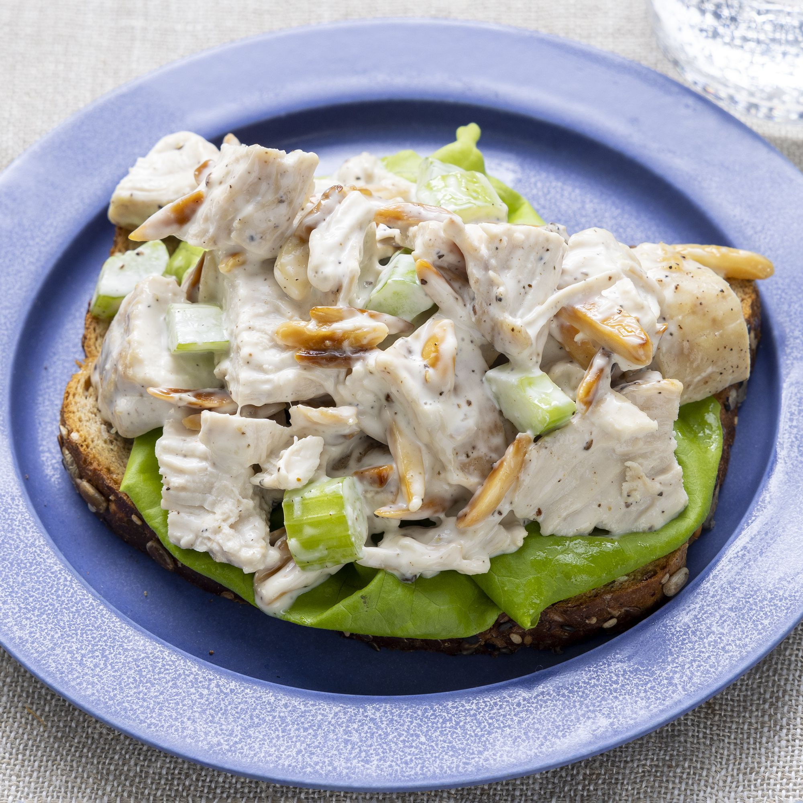

Classic Chicken Salad

Of all the summer salads, a classic chicken salad recipe is always a favorite at a picnic, a barbecue, or an office potluck! Just a few ingredients can be transformed into a cold, creamy salad or filling for a homemade chicken salad sandwich or wrap!
Keep this easy recipe on hand for last-minute sandwich prep when last-minute invitations come up! Serve this summer with a side of Italian pasta salad and crunchy grilled corn on the cob!
Ingredients in Chicken Salad
Chicken:
- Use leftovers from last night’s dinner or leftover rotisserie chicken or grilled chicken.
- To Make Chicken for chicken salad I like to use either poached chicken or baked chicken breasts or thighs.
- You can use canned chicken in a pinch but of course fresh is best when possible.
- Ensure the chicken is cooled and shred or chop the chicken into bite sized pieces.
Add-ins:
- As this is a classic chicken salad recipe, I’ve kept the additions to a minimum. Celery for crunch, green onions for flavor.
- This recipe can be made with a variety of nuts, veggies, and fruit for added flavor and texture.
- Chicken salad with grapes, avocado or dried cranberries is a favorite. Pecans or almonds pair well with this recipe.
Dressing:
- Mayonnaise is the base of this recipe and it’s simply seasoned.
- You can get creative and substitute some of the mayo for ranch dressing or your favorite salad dressing recipe.
- Create an Avocado Chicken Salad by replacing some of the mayonnaise with mashed avocado.
How to Make Chicken Salad?
Prepare a classic chicken salad in 15 minutes with only a few simple ingredients.
- Chop cooked and cooled chicken and place into a large bowl with celery and onions.
- Mix dressing ingredients (per recipe below) in a bowl. Toss with chicken.
- Serve on rolls, bread or over a bead of lettuce.
For this chicken salad sandwich recipe, any bread will do, thick slices of a baguette or buns/rolls hold up well. This is naturally low carb and it’s great over a tossed salad as well.
Got Leftovers?
REFRIGERATOR: In an airtight container, the chicken salad will last about a week in the refrigerator. Give it a stir and refresh the flavor with a little salt and pepper (or an extra dollop of Dijon mustard) and serve!
FREEZER: Chicken salad doesn’t freeze well. To prep ahead, simply dice the chicken and freeze. When ready to make, combine it with the ingredients below for a quick lunch!
Original article.